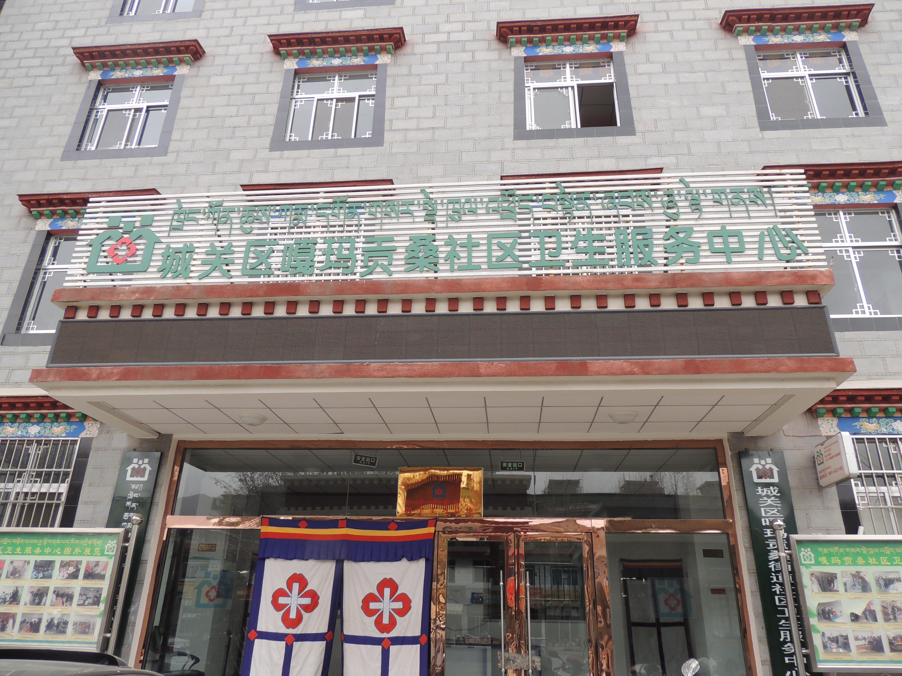

社区医院简介
社区卫生服务中心是在各级党委政府的关心和大力支持下，于2010年投资340余万元建成的。中心位于拉萨市纳金路35号,占地面积1143.6平方米，主要辐射嘎玛贡桑街道办事处管辖的4个社区（嘎玛贡桑社区、统建社区、路北社区、俄杰唐社区）。将为这4个社区的近1.08万常住居民及1.32万流动人口提供医疗、预防、保健、康复、健康教育、计划生育技术服务等“六位一体”的服务，是一家由政府主导的综合性社区卫生服务机构，是社保、新农合医疗定点医疗机构。
社区卫生服务中心共有职工18人，其中卫生技术人员13人，具有初、中级职称的卫生技术人员9人；全科医师6人，预防医师1人，护士2人，检验医师1人、B超医师1人。内设：计划免疫科、预防保健科、全科诊疗科、康复医学科、藏、中医理疗科、功能检查科、药剂科、后勤保障等科室。
服务内容和形式
医疗服务：设内、外、妇、儿、藏医、中医、针灸推拿等全科，开展常见病、多发病诊治，并提供藏、西药配方，门诊治疗、观察、设立家庭病床等医疗服务。
计免妇保：承担了辖区内0-6岁儿童的保健及计划免疫工作，育龄妇女保健工作，特别是孕期保健和产后访视。
慢病康复：为老年、体弱及病残卧床的病人提供上门诊治、建立家庭病床和送医送药服务。为高血压、糖尿病人定期检测，开展慢性病管理及康复指导服务。
健康教育：为您咨询解答卫生健康知识，提供保健处方和健康教育资料，定期开设社区保健知识讲座，开展健康促进工作。
计划生育服务：为育龄妇女提供计划生育技术指导，优生优育咨询，避孕知情选择及孕环监测服务。中心内提供看病、交费、取药一条龙服务，并有注射、理疗、吸氧、输液、换药等多种治疗，基本药物全部实行零差价销售。
预防保健：进行儿童计划免疫预防接种，开展婴幼儿保健，孕产妇保健，并提供心理咨询服务。
藏中医科：是中心的重点发展科室，对慢性病、多发病的诊治在社区居民中有较高的知名度，主要开展针灸、推拿、火罐等项目。
中心具备血细胞分析仪、尿液分析仪、多普勒胎心仪、彩色B超仪、心电图分析仪、血糖分析仪等，为各类人群的健康检查提供便利服务。